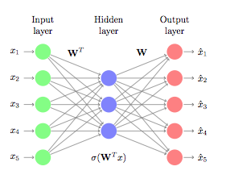

The "Stat Club" is an undergraduate statistics club at Southern Methodist University.
It is a student-run academic group with the goal of providing students with tools and opportunities to grow within the field of statistics. We hold events throughout the year. For more information, please contact our president: Hannah Cramer (email address).
Our next meeting:
February 23, 2018
Meeting Agenda
We will have a guest speaker: Ryan Cole (a graduate student in the Statistics Department).
He will be going over some aspects of Python, which is a heavily used scripting/scientific computing platform.
Additionally, we will continue to plan for Data Fest!
There will be pizza and light refreshments. If you are on the mailing list, please
RSVP to the invite when it arrives (if you would like to be added to the mailing list,
contact Bivin Sadler (bsadler@smu.edu).
Syllabus:
here.
Discussions:
Piazza group.
|

|